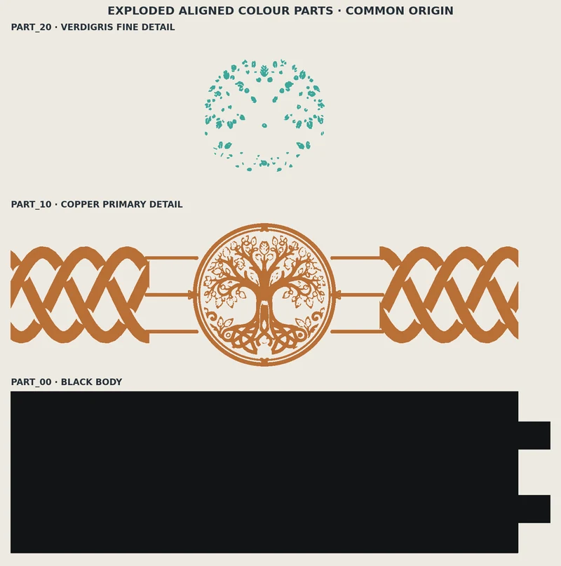

Why a printed rail?
I wanted a Celtic braid running around the living room, with a black background and copper detail. Buying a length of something similar wouldn't really give me the pattern, scale or corner pieces I had in mind. Printing it in sections meant I could make the design fit the actual walls.
The first job was settling the repeat. The installed pitch is 220 mm; each printed section is 234 mm long because the joins need to disappear behind the neighbouring section. The body is 70 mm tall and 2.4 mm thick.

Getting the pattern to meet

It's easy to make a single panel look right. It takes more care to have the braid continue into the next panel without a sudden jump. The hidden joins help, but the braid still needs to arrive at each end in the same phase. Short runs and corners also have to follow that decision.
I kept the straight rail as a common part, then made a few exceptions for the places that needed them. It was a more manageable approach than treating every length as a separate design.
The feature pieces
Once the standard repeat was working, there was room for small features to sit within it: a cat-paw boss, a knot ward, a sun-and-moon compass, and more recently an ornate Tree of Life.
The Tree-of-Life design uses a black body, copper relief and a little verdigris on the tree detail. The source files, multipart STL pack and print instructions exist. That makes it ready for a physical proof, not automatically a finished wall installation.

What's next?
The adopted straight-panel system is already the reference for new pieces. I'm still adjusting special panels and details as they are printed, particularly where an attractive drawing needs simplification to work at nozzle scale.
At some point I’ll photograph a complete wall run for this record. For now, these are print-layout screenshots and production renders; they explain the design but do not show the installed result.
← Back to the workshop